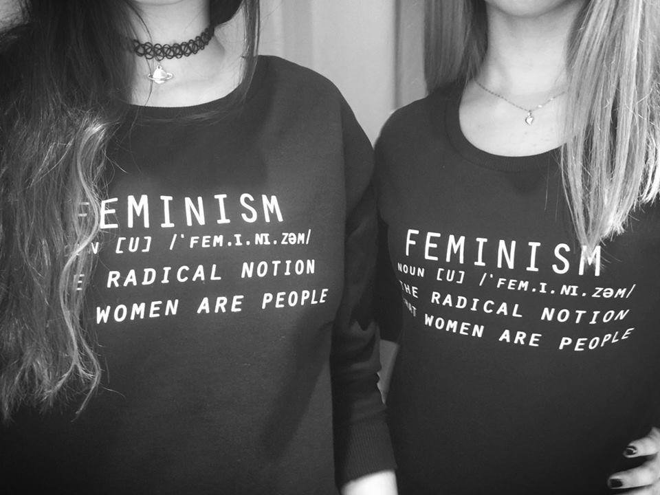

Postfeminizem priznava drugi val feminizma in njegove dosežke, kot so prizadevanja za enakost med spoloma na vseh področjih, a hkrati meni, da feminizem v taki obliki ne več pomemben, saj je enakopravnost dosežena. Osredotoča se bolj na druga področja, npr. na področja popularne kulture, ki spodbujajo žensko k ženstvenosti, izražanju seksualnosti na star način, torej z razgaljanjem telesa. Postfeminizem je bolj naklonjen medijem.
Kljub temu, da ima izraz postfeminizem negativen prizvok, saj naj bi rušil feminizem, še vedno ne obstaja enotna definicija, ki bi natančno določala, kaj točno je postfeminzem. Zaradi netočnosti definicije je večina mladostnic zmedena.
